Assignment 1, Shape Analysis
CS736: Medical Image Computing, IIT Bombay (Spring 2019) Dhruv Shah and Ansh Khurana
Contents
Estimation of similarity transforms is done by projecting the pointsets to preshape space and using Kabsch's algorithm for estimating n-dimensional rotations.
Implementation of the necessary functionalities can be found in the corresponding Matlab functions 'toPreshape', 'alignKabsch', 'getMeanshape' and 'getModes'.
clc; clear all; close all;
1. Simulated dataset: 2D Ellipses
1(a)
load('../data/ellipses2D.mat'); [~, ~, Samples] = size(pointSets); for i = 1:Samples plot(squeeze(pointSets(1, :, i)), squeeze(pointSets(2, :, i)), '.'); hold on; end title('Initial Poinsets (1 a.)');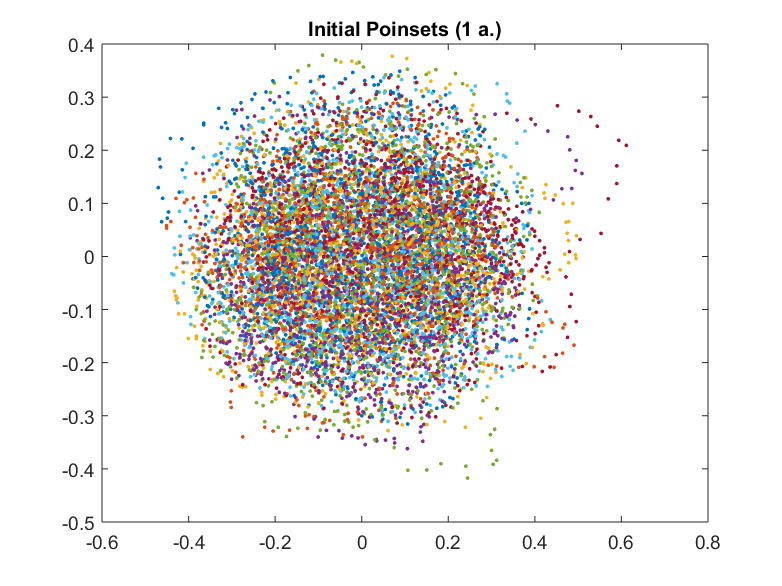
1(b)
figure; in_ps = toPreshape(pointSets); [mean_ps, out_ps, ~] = getMeanshape(in_ps); for i = 1:Samples plot(squeeze(out_ps(1, :, i)), squeeze(out_ps(2, :, i)), '.'); hold on; end plot(mean_ps(1, :), mean_ps(2, :), 'LineWidth', 2); title('Computed mean along with aligned pointsets (1 b.)');
1(c)
figure; [V, D] = getModes(out_ps, mean_ps); eigenvalues = diag(D); plot(eigenvalues, '-o'); title('Variances along each principal mode of shape variation (1 c.)');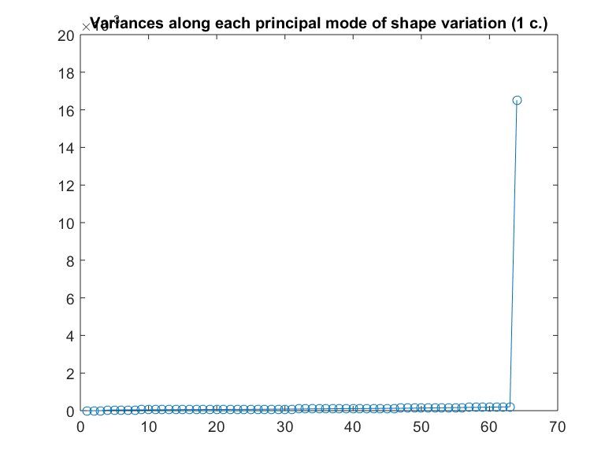
1(d)
thresh = 0.1; % Characterizing principal modes of variation with significant eigenvalues as > 10% of the highest mode num_principal = sum(diag(D) > thresh * max(diag(D))); for i = 1:num_principal figure; for j = 1:Samples plot(squeeze(out_ps(1, :, j)), squeeze(out_ps(2, :, j)), '.', 'MarkerSize', 4); hold on; end plot(mean_ps(1, :), mean_ps(2, :), 'LineWidth', 2); hold on; lambda = eigenvalues(end - (i-1)); mode = V(:, end - (i-1)); mode = reshape(mode, [size(in_ps, 1), size(in_ps, 2)]); plot(mean_ps(1, :) + (2*sqrt(lambda)*mode(1, :)), mean_ps(2, :) + (2*sqrt(lambda)*mode(2, :)), 'LineWidth', 2); hold on; plot(mean_ps(1, :) - (2*sqrt(lambda)*mode(1, :)), mean_ps(2, :) - (2*sqrt(lambda)*mode(2, :)), 'LineWidth', 2); hold on; title(strcat('Mean along with principal mode (', num2str(i), ') of variation (1 d.)')); end % % end question 1
2. Hand Shapes 2D
clear; close all; load('../data/hands2D.mat'); pointSets = shapes; clear shapes; [Dim, Num, Samples] = size(pointSets);
2(a)
figure; for i = 1:Samples plot(pointSets(1, :, i), pointSets(2, :, i), '.'); hold on; end title('Initial Poinsets (2 a.)');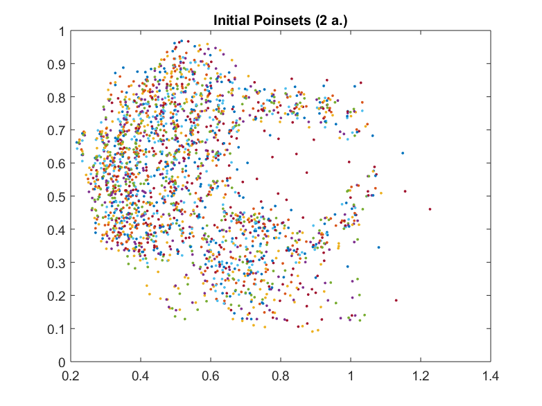
2(b)
figure; in_ps = toPreshape(pointSets); [mean_ps, out_ps, logger] = getMeanshape(in_ps); [V, D] = getModes(out_ps, mean_ps); for i = 1:Samples plot(squeeze(out_ps(1, :, i)), squeeze(out_ps(2, :, i)), '.'); hold on; end plot(mean_ps(1, :), mean_ps(2, :), 'LineWidth', 2); title('Computed mean along with aligned pointsets (2 b.)');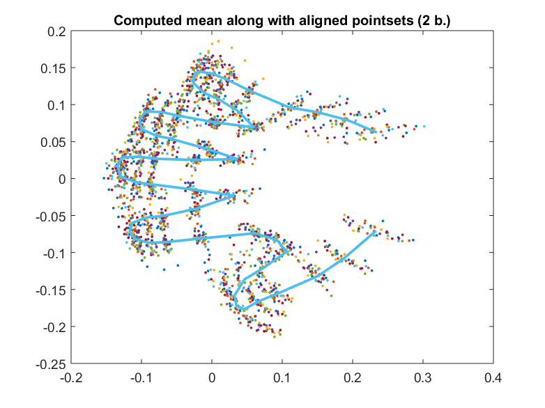
2(c)
figure; eigenvalues = diag(D); plot(eigenvalues, '-o'); title('Variances along each principal mode of shape variation (2 c.)');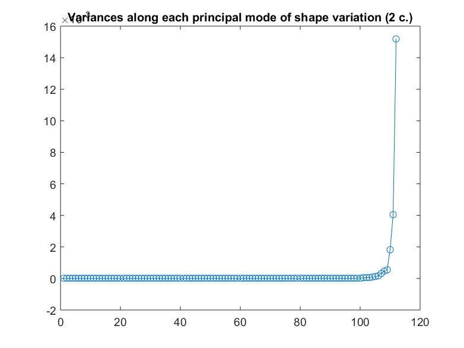
2(d)
thresh = 0.1; % Characterizing principal modes of variation with significant eigenvalues as > 10% of the highest mode num_principal = sum(diag(D) > thresh * max(diag(D))); for i = 1:num_principal figure; for j = 1:Samples plot(squeeze(out_ps(1, :, j)), squeeze(out_ps(2, :, j)), '.', 'MarkerSize', 4); hold on; end plot(mean_ps(1, :), mean_ps(2, :), 'LineWidth', 2); hold on; lambda = eigenvalues(end - (i-1)); mode = V(:, end - (i-1)); mode = reshape(mode, [size(in_ps, 1), size(in_ps, 2)]); plot(mean_ps(1, :) + (2*sqrt(lambda)*mode(1, :)), mean_ps(2, :) + (2*sqrt(lambda)*mode(2, :)), 'LineWidth', 2); hold on; plot(mean_ps(1, :) - (2*sqrt(lambda)*mode(1, :)), mean_ps(2, :) - (2*sqrt(lambda)*mode(2, :)), 'LineWidth', 2); hold on; title(strcat('Mean along with principal mode (', num2str(i), ') of variation (2 d.)')); end % end question 2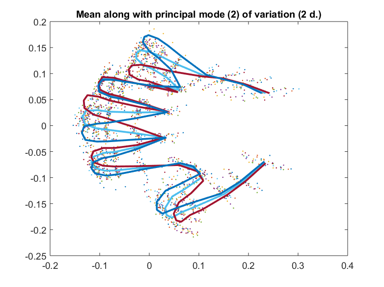 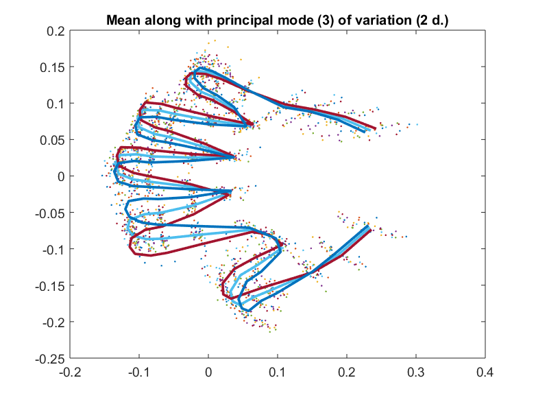
3. Wrist-bone Shapes 3D
3(a)
Initial pointsets (with triangular meshes) for Question 3 Code for visualizing the data
clear; figure; load('../data/bone3D.mat'); [Dim, Num, Samples] = size(shapesTotal); j = 0; for i = 1:Samples subplot(2, 3, (i-6*j)); trimesh(TriangleIndex, shapesTotal(1, :, i)', shapesTotal(2,:, i)', ... shapesTotal(3, :, i)'); title(['Shape ', num2str(i)]); axis([-0.1, 0.1, -0.1, 0.1, -0.1, 0.1]); if rem(i, 6) == 0 j = j + 1; % sgtitle('Initial pointsets (with triangular meshes) (3 a.)'); if i ~= Samples figure; end end end pointSets = shapesTotal; clear shapesTotal; in_ps = toPreshape(pointSets); [mean_ps, out_ps, logger] = getMeanshape(in_ps);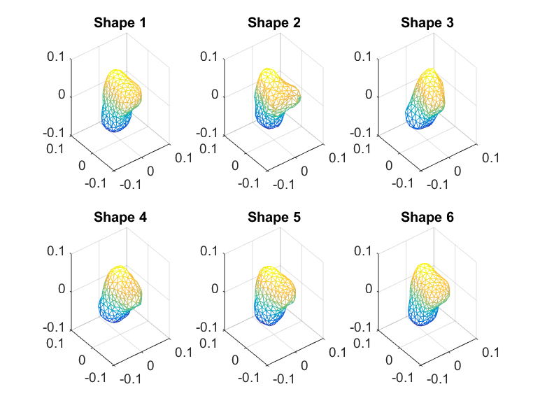
 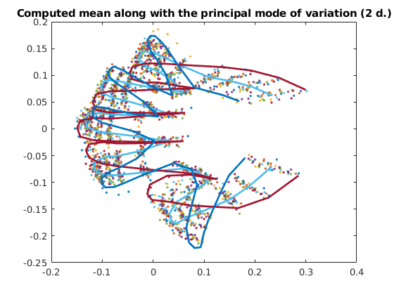
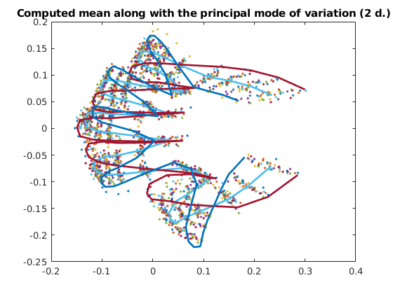 3(b)
figure; trimesh(TriangleIndex, mean_ps(1, :)', mean_ps(2,:)', ... mean_ps(3,:)'); hold on; for i = 1:Samples scatter3(squeeze(out_ps(1, :, i)), squeeze(out_ps(2, :, i)), squeeze(out_ps(3, :, i)), 5); end title('Computed mean of aligned shapes (3 b.)'); axis([-0.1, 0.1, -0.1, 0.1, -0.1, 0.1]);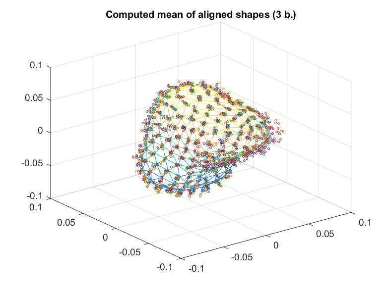
3(c)
figure; [V, D] = getModes(out_ps, mean_ps); eigenvalues = diag(D); plot(eigenvalues, '-o'); title('Variances along each principal mode of shape variation (3 c.)');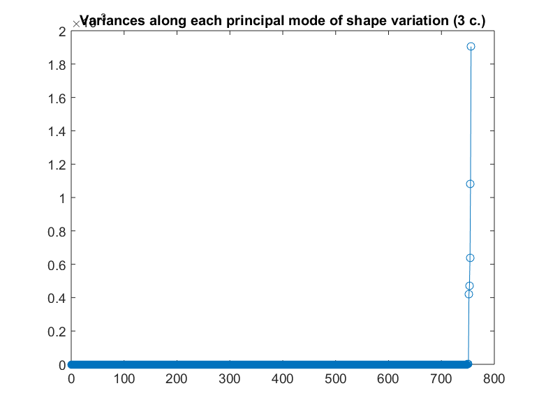
3(d)
thresh = 0.25; % Characterizing principal modes of variation with significant eigenvalues as > 10% of the highest mode num_principal = sum(diag(D) > thresh * max(diag(D))); for i = 1:num_principal figure; lambda = eigenvalues(end - (i-1)); mode = V(:, end - (i-1)); mode = reshape(mode, [size(in_ps, 1), size(in_ps, 2)]); subplot(1, 3, 3); trimesh(TriangleIndex, mean_ps(1, :)' + (2*sqrt(lambda)*mode(1, :))', mean_ps(2, :)' + (2*sqrt(lambda)*mode(2, :))', ... mean_ps(3, :)' + (2*sqrt(lambda)*mode(3, :))'); hold on; title('Mean + 2 \lambda'); axis([-0.1, 0.1, -0.1, 0.1, -0.1, 0.1]); subplot(1, 3, 2); trimesh(TriangleIndex, mean_ps(1, :)', mean_ps(2,:)', ... mean_ps(3,:)'); title('Mean'); axis([-0.1, 0.1, -0.1, 0.1, -0.1, 0.1]); hold on; subplot(1, 3, 1); trimesh(TriangleIndex, mean_ps(1, :)' - (2*sqrt(lambda)*mode(1, :))', mean_ps(2, :)' - (2*sqrt(lambda)*mode(2, :))', ... mean_ps(3, :)' - (2*sqrt(lambda)*mode(3, :))'); hold on; title('Mean - 2 \lambda'); axis([-0.1, 0.1, -0.1, 0.1, -0.1, 0.1]); set(gcf, 'units', 'normalized'); set(gcf, 'Position', [0, 0.1, 1, 0.9]); % sgtitle('Mean along with the principal mode of variation (3 d.)'); end % % end question 3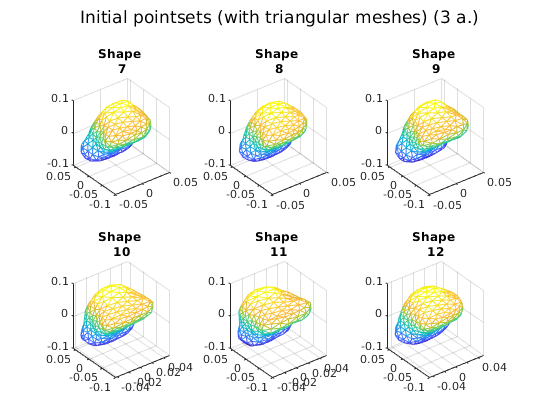 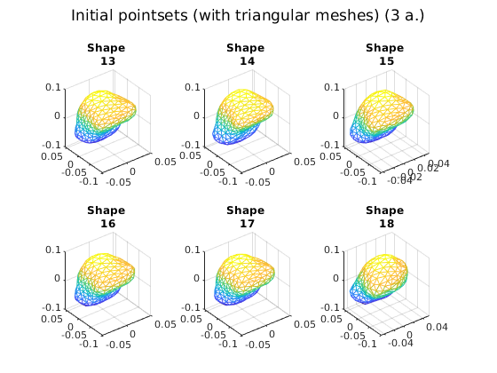 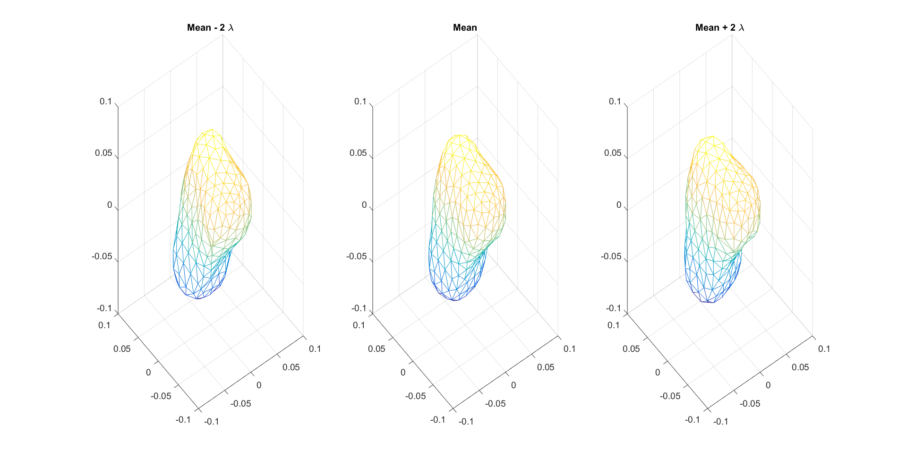